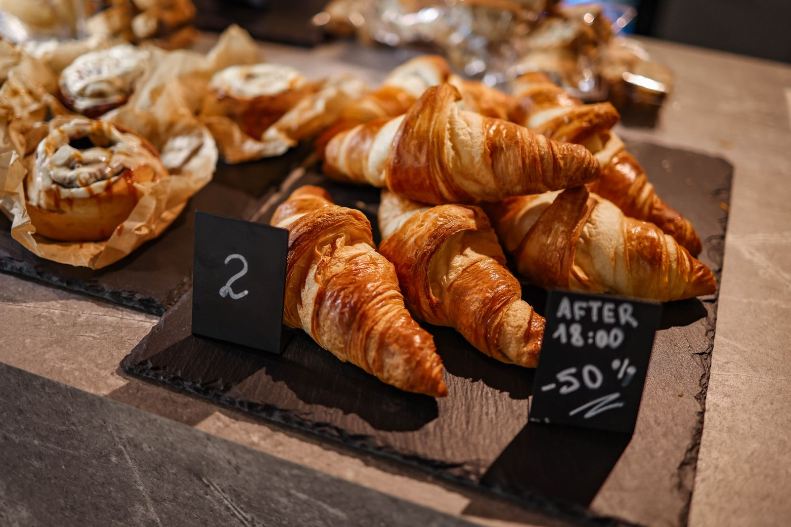
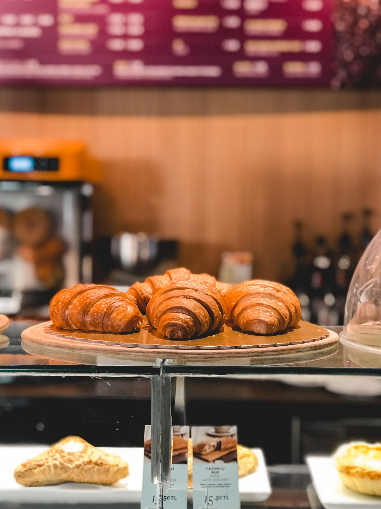
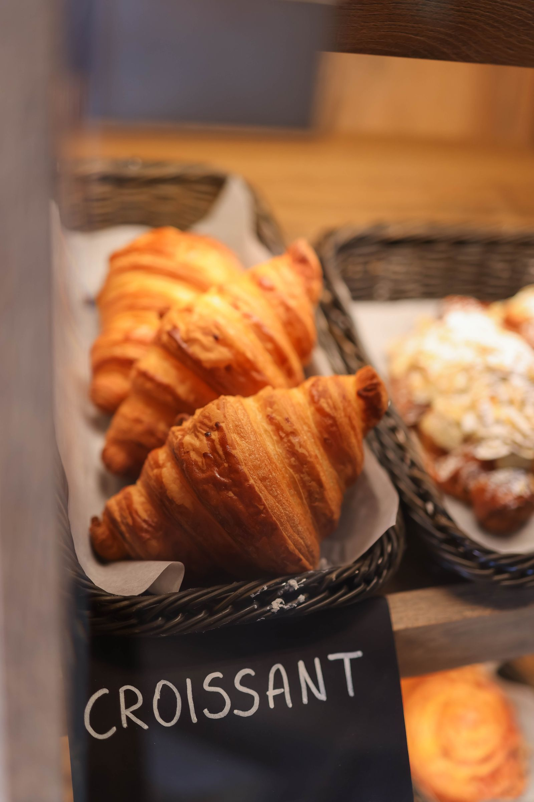

From the wood-fired oven at Sub Rosa Bakery
A wood-fired bakery and cafe in Church Hill, Richmond.
Wood-fired breads
Baked from house-milled regional grains.
Wood-fired pastries
Baked from house-milled regional grains.
Croissants
Fig and cheese, almond, and chocolate.
Lamb borek
Quiche
Coffee
Gallery



All gallery photos are stock photos, labeled as such. They show bakery pastries, not this bakery's breads or pastries.
Contact
Call (804) 788-7672 Email subrosabakery@gmail.com
Sub Rosa Bakery serves Richmond, VA. Questions? Call (804) 788-7672.